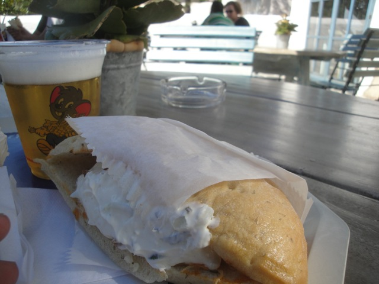

Now this is going to be a very interesting review as this isn't just any ordinary theme park. No. Europa Park is one of my favorite theme parks of all time. No, I'm dead serious. Just read our Top 10 Theme Parks List, and Europa Park has the #3 spot. And if you refuse to count Disney properties since....well....it's Disney! That's practically cheating! If you exclude Disney parks, then Europa Park would become my favorite theme park that I've visited so far. And it's not hard to see why. THIS PLACE IS F*CKING AMAZING!!! I LOVE EVERYTHING ABOUT THIS PARK!!!! IT HAS EVERYTHING!!! You want roller coasters? You're in luck. Europa Park is actually owned by the people who make MACK coasters, so the park is actually kind of a showcase for all of their coasters. This is the place where new Mack prototypes are born, including Euro Mir, which is one of the most insane and fun coasters ever. Thanks to it, we now have Mack Spinners. And Blue Fire is another great ride that brought us the new wave of amazing Mack Launchers that are reallyfunrides. But don't worry, they also have some really fun coasters that aren't MACK creations, such as a B&M Hyper and a GCI Woodie. The flat ride collection is also fairly good, the dark ride collection can rival that of Disney. They have some really great food, plenty of other attractions, and the theming here is just PHENOMENAL!!! It's themed to all the countries in Europe and they do a phenomenal job. It also helps that I love Europe, and so I love all the theming around Europe. It's just really great. Really great. What more can I say? I love Europa Park. Now let me go into full detail about how much I love this park as I explain each category.
Here are the reviews of all the Flat Rides at Europa Park. Now if there's any sort of weak spot to Europa Park, it'd be the park's flat ride collection. Honestly, I can't think of anything that stands out. I know I didn't ride any flat rides when I was at Europa Park, and I don't regret that. Hell, the only flat ride I know of is their Pirate Ship, which I only remembered because of its name. Vindjammer, which sounds a lot like Windjammer. After checking, they also have a music express, some chairswings, some bumper cars, and some teacups. Hey, it may not be that much, but Europa Park has so much, that they can afford to take it easy in the flat ride department.
Dark Rides
Considering how Europa Park is one of the parks that competes with Disney, they have a really good dark ride collection. All right. Let's dive into their best dark ride, Geisterschloss. Or as I like to call it, the Haunted Mansion knock off. Now, you would think that I wouldn't like this ride since I almost never enjoy Disney Knock-Off rides and usually when I enjoy them, I enjoy them in a "So bad it's good" way. But this is actually one of the rare Disney knock-offs that is nearly as good as the original. And considering how much I love the Haunted Mansion, that's really good. It's not really scary, it's just a really fun ride in a kind of goofy way. All right. Moving on. They also have this fun little dark ride that takes you around the North Pole and shows off Reindeer. It's sort of Christmasy. I mean, there's reindeer, but they don't fly or have glowing red noses. And there's some snowmen, but they're just your typical snowmen. They don't come to life through a magic talking hat. And of course, there's no Santa Claus. So, it's random. But I enjoyed it, even if it felt weird riding a winter themed dark ride in summer. And finally, we have the "Stupid Boat Rides" as Cliff liked to call them. And despite the name, I really enjoyed both of them. One just shows around the gardens. Hey, you get to see some really pretty flowers. The other one has this sort of puppet-Pinnochio theme to it. And despite the Pinnochio theme, it has much more to do with the book than the Disney movie. Think less boys turning into donkeys and more creepy clowns. And those are just the dark rides that I managed to ride. They also have a Pirates of the Carribean knock-off, and since I really enjoyed their Haunted Mansion knock-off, I'll probably like this too. There's also a dark ride with a Teddy Bear picnic that I didn't ride, a dark ride that looks like it's about the Medieval Times, Camelot, and all that sorts. Ooh, maybe I'll get to see some Black Plague in there. There's also a dinosaur dark ride, and that's just the stuff that I know. Europa Park is so full of surprises and things to do that I'm almost certain that I'm leaving out some stuff. Somewhere, in a building that I ignored, there's a fun little dark ride, waiting for you.
Grim Grinning Ghosts come out to socialize.
Water Rides
I didn't ride any of the water rides at Europa Park, but from what I saw, it seemed like a decent collection. Let's start out with the water ride that people want me to talk about. Atlantica Supersplash. Now some people may count this as a credit. No. It's not. They have a water coaster at Europa Park. It's called Posideon. There's a review of it up here. Anyways, I may not have ridden Altantica Supersplash at Europa Park, but I did ride its clone over at Sea World San Antonio. And it's fun, though kind of awkward and clusmy. DEFINETLY NOT a credit!!! They also have a log flume and a rapids ride. I didn't ride either of them, and I know very little about them. From glancing at them, they just seem ordinary with nothing unique. But this is Europa Park. So you never know what they could offer. And even if it's just your run of the mill water rides, they're still going to be fun. =)
I don't regret not riding this ride.
Dining
The dining at Europa Park is that of really high quality. Just with all of the rides in the park and the theming in the park, the dining in the park is extremely top notch and done by professionals. They just have so much to offer and such a wide variety of food, and it's all so good. First off, the Raclette they have in Switzerland is really freaking good. If you've eaten with me, then you know that I love cheese. And this is some really good stuff over here at Europa Park. I could live off that Raclette. I want to eat more Swiss cheese now. Damn it! Continuing with even more great food, they also serve these really good Gyros. The meat is really good, I love the pita it's served in, and I love Tzatziki sauce. Hmm, when's the last time I ever ate Greek food? Cause damn it! Now I want some! And of course, there's the hotel food, which is just great. They have great pizza, meatloaf, potatoes, pasteries, and much more. I loved everything that Europa Park had to offer. Oh, and being in Germany, they have a wide variety of German beers. And I loved each and every single one of those beers. And that's just the stuff I ate. I'm sure there's lots more great food. And hey, they even have the Food Loop resteraunt. I'm not exactly sure what they serve there, but it's Europa Park. So I know it's going to be good, and it's going to be fun to watch it come down to your table via little roller coaster. All I know is that Europa Park is for sure grabbing a spot on our Top 10 Theme Park Dining Options. You will not starve at Europa Park and you will most certainly enjoy the food. =) Damn it!! Now I'm really hungry. Now I gotta go out for dinner tonight.
Mmm. Raclette. Need cheese. *drool*

No wait! Now I want a gyro and German Beer. Damn it! I can't decide!
Theming and Other Attractions
Here are the reviews of all the other stuff at Europa Park. And trust me. There's A LOT. First off, the theming. HOLY CRAP!!! Europa Park is just DRIPPING with theming and atmosphere. Cause like I said earlier, this park is generally compared to the Disney parks, and you can see why with the theming. It just goes ALL OUT. Everything is just draped with this magnificent, beautiful, theming. They really give you the impression of showing you all around Europe in this park. And all throughout the park, there's just...these little touches. You wouldn't really take notice of them if you're just running from credit to credit. But they really are fantastic. I love it when parks put in these small touches. It always makes for a much more pleasant park experience. And even on the rides, it's just great to see these small little touches of theming. I love the Swiss theming around the Bobsled and Wild Mouse. I love the Russian theming around Euro Mir. The Icelandic theming around Blue Fire. It all works just so well. And that's not even talking about the other stuff to do that's besides the theming. Well first off, they have this really strange sort of 3Dish show where one person is a jester and the other is a wizard, and then you have to find the wizard. Um...I don't get it. Moving on from that, they also have the typical European Playgrounds, which unlike the U.S Playgrounds, are freaking INSANE!!! No really! The slides are like 5 stories tall and you just FLY down them. I wish that's how slides in the U.S worked. Oh well. I love them all over Germany. And that's just the stuff. Apparently there was this creepy doll exhibit that I was told about after leaving Europa Park and considering how big Europa Park and just how much stuff there is to do at the park, you will find more stuff. It's just part of the charm of Europa Park. Wander around the park, get lost, and enjoy all that the park has to offer. Who knows what you'll find. =)
Europa Park or Switzerland?
In Conclusion
Europa Park really is that good. One of the best parks ever. Without a doubt, my favorite park in Europe and my 2nd favorite theme park (unless you refuse to count the Walt Disney World Resort, in which case, it's my favorite park). It just has everything. Great Roller Coasters, ranging from fun B&M Hypers, to fast wooden coasters, to floaty loopers, to strange and bizarre spinning coasters that rotate more than spin, but it's still one of the coolest and craziest rides out there. And that's just the variety in it's roller coaster collection. It also has great dark ride collection that rivals that of the Disney parks, theming that rivals that of the Disney parks, some incredibly good and filling food that showcases the best of the cuisines of each European Country, and just so much random stuff for a person to do, see, and explore for the day. It is just that good. I love Europa Park. I don't have a single bad thing to say about this park. And I want to go back as soon as possible. The fact that I live in California be damned!
Enthusiast FAQs.
*Are there kiddy coaster restrictions? - Europa Park doesn't have a kiddy coaster.
Tips
*Get a big group of friends to have a Euro Mir Party.
*Be sure to have lots of time to just explore Europa Park.
*The POV Policy at Europa Park is kind of wishy washy. I was able to get POVs of everything except Blue Fire, Wodan, and Silver Star. And those were primarily just me assuming that they wouldn't be allowed. So who knows. Maybe they are allowed. And maybe they aren't allowed with a normal camera, but shooting them with a GoPro would be acceptable. It's very up in the air.
*Don't treat Europa Park like a credit whoring stop.
*Never assume that something is going to be boring at Europa Park.